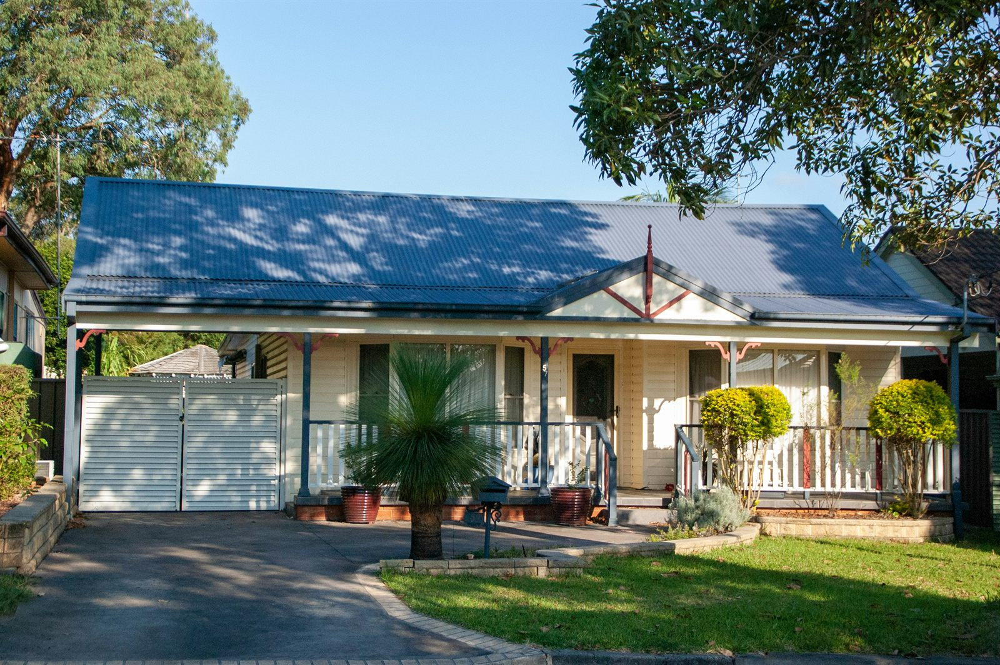

Home Loans Beyond the Standard Payslip.
Your Income Doesn’t Fit a Template. Neither Should Your Home Loan.
First Home Buyers Property Investors Self-Employed Professionals
Buying a home is a huge commitment, and finding the right home loan shouldn’t add to the stress. At FNSQ Home, we specialise in helping self-employed borrowers, property investors and first home buyers navigate complex lending situations.
When a standard bank assessment doesn’t tell the full story, we look deeper. We understand your financials, assess your situation from a lender’s perspective, and find a lending policy that works for you.
Because getting into your new home should feel exciting, not overwhelming.
Our service to you is free. Lender fees, government charges, and other costs may apply depending on your loan and circumstances.

What Is a Home Loan?
A home loan is financing used to purchase residential property, whether that is your first home, your next home, or an investment property.
Choosing a home loan is about more than comparing interest rates. The right loan structure depends on factors such as your income, deposit, existing debts, credit profile, property type, employment or business structure, investment plans, and lender-specific policies.
This is important when your circumstances don’t fit neatly into a standard application. At FNSQ Home, we take the time to understand the full picture before considering lender options.
So, which lending strategy makes the most sense for your circumstances and goals?
That distinction can make a significant difference for self-employed borrowers, investing in property, purchasing their first home, or managing more complex financial structures.
Why Self-Employed Income Can Look Complicated to a Bank
Most banks assess self-employed income using rigid, PAYG-shaped rules, two years of tax returns, no addbacks considered properly, and no understanding of how trust distributions, company structures, or fluctuating year-on-year revenue actually work. So a business owner earning genuinely more than the number on their tax return gets assessed as if they earn less, or gets declined outright because their income “looks inconsistent.”
It isn’t inconsistent. It’s just not being read correctly.
Our expert home loan brokers specialise in navigating complex income structures and finding a strategic way forward, helping you understand your options and identify finance that fits your circumstances. We know which lenders use low-doc and alt-doc policies properly, which will add back depreciation and one-off business costs, which understand trust and company structures without treating them as a red flag, and which will look at a single strong year rather than penalising you for an average across two.

Your First Home Deserves a Strategy, Not Just a Loan
Getting your first “yes” is only half the job. The real question is whether the structure you start with sets you up well for what comes after: renovation, a second property, changing jobs, starting a business of your own. We build a first home buyer strategy around where you’re headed, not just where the deposit gets you today, including guidance on government schemes, guarantor structures and LMI where relevant.
Buy the Property, Build a Strategy & Grow Your Portfolio.
If you’re financing your second, third or fifth property, the questions change. Serviceability, equity release, cross-collateralisation risk, buffer rates, and how each purchase affects your capacity for the next one. These are structural decisions, not just approval hurdles. We work with investors to sequence purchases and structure loans so one property doesn’t quietly limit what you can do with the next.
Before We Look at Lenders, We Look at Your Current Situation
- Your income structure (sole trader, company, trust, partnership) and how each lender actually assesses it
- Your existing debt and how it’s structured, not just what it costs
- Your 3–5 year plan
- Ownership structure implications for tax, asset protection and future borrowing capacity
- Whether a low-doc, full-doc or specialist policy pathway suits your situation
Refinancing Your Home Loan
Your current home loan may have been right for you when you first took it out. That does not necessarily mean it is still the right structure today. Refinancing allows you to upgrade or revise your existing loan with a loan that has more favourable terms and lower interest rates, with improved credit ratings.
Refinancing may allow you to:
- Review your current loan structure
- Access equity for another property purchase
- Consolidate eligible debts
- Change loan features
- Adjust your repayment structure
- Prepare for a future investment
- Reassess your lending position as your circumstances change
But refinancing should have a purpose; we look at your current position, your objectives and the available lender policies before recommending whether refinancing makes sense for your situation.
Why Complex Borrowers Choose Finance Square Home Loans
Strategy first. Lender second. Always in that order.
A Strategy Built Around Your Circumstances
Self-employed and don’t fit the standard PAYG mold? Buying your first home and don’t know where to start? Building a property portfolio and need it structured right, not just approved? We get it! We start every conversation by understanding your goals, and then build the lending strategy to match them. Not the other way around.
Full Visibility, Every Step
You will know where your application stands at every step, what a lender needs from you, and why. There are no vague timelines, no jargon, no surprises at settlement. If something in your file needs work before we submit it, we tell you upfront, not after a decline.
A Track Record With the Deals Banks Say No To
We’ve helped self-employed borrowers, medical professionals, and investors settle home loans that didn’t fit a standard bank checklist, because we knew which lenders would actually look at the full picture, not just two years of tax returns.
A Specialized Home Loan Broker Who’s Actually Reachable
Home loans move fast, and complex applications need someone who picks up. Our specialized home broker stays close to your file from pre-approval to settlement, so you’re not left chasing an update or explaining your situation to someone new.
Guidance That Keeps You Ahead of the Market
Lending policy for self-employed borrowers, investors, and first home buyers shifts constantly: new lender appetites, new grants, new serviceability rules. We track these changes so your loan structure works for where the market’s heading, not just where it stands today.

Build your borrowing strategy today.
Opt in for a 15-minute call or take our 60-second quiz to assess your goals, your numbers, and what you’re actually trying to achieve. Our service to you is free, but other fees and lender charges may apply. No pressure, no obligation.